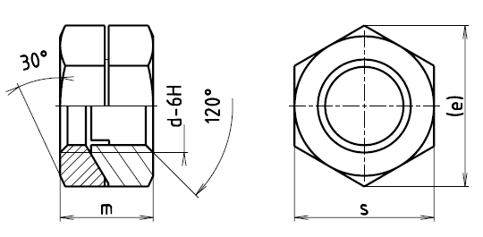

Příklad označení pojistné dvoudílné matice se závitem M10:
POJISTNÁ MATICE ČSN 02 1491.22–M10
| Závit d | M5 | M6 | M8 | M10 | M12 | (M14) | M16 | (M18) | M20 | (M22) |
|---|---|---|---|---|---|---|---|---|---|---|
| e | 9,2 | 11,5 | 16,2 | 18,5 | 20,8 | 24,2 | 27,7 | 31,2 | 34,6 | 36,9 |
| s | 8 | 10 | 14 | 16 | 18 | 21 | 24 | 27 | 30 | 34 |
| m | 7,5 | 9,5 | 11,5 | 13 | 16,5 | 16,5 | 19,5 | 23 | 23 | 27 |
| Hmotnost [g] | 1,8 | 5,2 | 8,8 | 12,8 | 27,9 | 30,9 | 59,5 | 93 | 99 | 156 |
| Závit d | M24 | (M27) | M30 | (M33) | M36×3 | (M39×3) | M42×3 | (M45×3) |
|---|---|---|---|---|---|---|---|---|
| e | 41,6 | 47,3 | 53,1 | 57,7 | 63,5 | 69,3 | 75,1 | 80,8 |
| s | 36 | 41 | 46 | 50 | 55 | 60 | 65 | 70 |
| m | 27 | 31 | 33 | 35 | 42 | 46 | 50 | 53 |
| Hmotnost [g] | 148 | 188 | 259 | 316 | 475 | 619 | 801 | 974 |